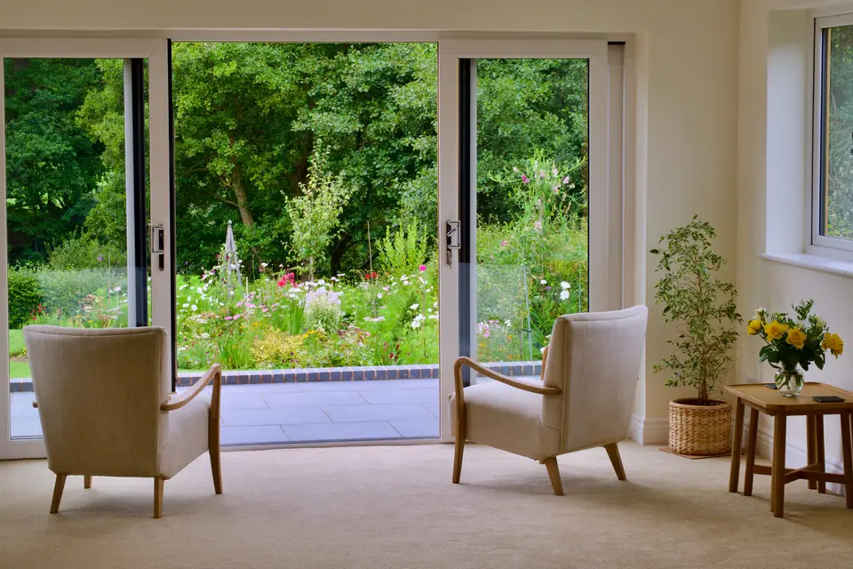

About
Re;mind is a small, independent practice in Whiteley, Hampshire, founded by Susie Deacon, offering therapy for adults and young adults, in person and online.
Our approach is pluralistic. We listen first, then agree an approach, a pace and a frequency that fit your life. There are no scripts, tick-box programmes or fixed timelines. Our counsellors and clinical psychologist draw on counselling, EMDR, hypnotherapy, VR therapy and coaching, and work with stress, anxiety, PTSD, grief, self-doubt, anger and relationships. The aim is to help you make sense of your own story, with someone who knows you, so that change can last.
A brief introductory consultation helps us choose an approach together. Pacing, session timing and the number of sessions are worked out individually, and payment can be discussed.
You do not need a plan or the right words. Your therapist asks gentle questions about what brings you here, and most people find it easier than they feared.
Sessions take place at Steel House in Solent Business Park, Whiteley, an accessible building with a lift and free parking at the door, or online if that suits you better.
Services include counselling, EMDR, hypnotherapy, VR therapy, coaching and therapist mentoring.
Everything starts with a brief introductory consultation. It is a chance to slow down, say what is weighing on you and get a sense of whether the fit feels right. Together we look at what brings you here, whether that is anxiety, trauma, grief, a specific fear, self-doubt, anger or a relationship under strain, and begin to consider which approach might be most useful. Nothing is decided on that first call, and you do not need a referral.
Services
-
01

Talk through what is weighing on you with a pluralistic counsellor who draws on CBT, DBT, transactional analysis and Gestalt. For stress, grief, trauma, anxiety and low mood. -
02
 Helps the mind file away memories that still feel raw, using guided eye movements or tapping while you recall the event from a safe distance. Often used for trauma.
Helps the mind file away memories that still feel raw, using guided eye movements or tapping while you recall the event from a safe distance. Often used for trauma. -
03Deep relaxation and guided imagery, with you in control throughout. For anxiety, fears, habits such as smoking, pain, IBS and nerves before medical treatment.
-
04Face a feared situation step by step in a headset, with your therapist beside you. For specific fears such as heights, crowds, open spaces or spiders.
-
05Forward-looking support for career, life, health, study and relationships. Unlike counselling, coaching starts from where you want to be.
-
06One-to-one mentoring, small group sessions and guest speakers for counsellors in training or in practice, face to face in Whiteley.